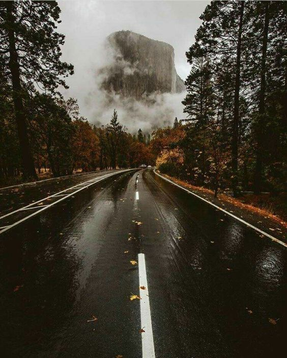

Here are five more pictures that describe me as a person
I love dad jokes and puns. I have mastered the art of the pun, yet I must not use its power, as it's too dangerous. And I love Buzzfeed quizzes and anything that tells me who I am without me having to figure it outI have anxiety, so I'm in the state of panic about 80% of the time. I am also gay and I practically never shut up about it

My favorite season is autumn, I adore travelling and I love mist and rain a lot more than sun. I also love aesthetically pleasing pictures that were clearly taken in autumn more than I love my lifeThis picture speaks to my love for puns. And I am the non-binary friend.I am the catgo back to the previous images